A site, graded, cut, watered and drawn, in one session
coyote_mountain_topo is a landscape grading tool that runs in the browser. It fetches real terrain for any place on earth, lets students grade it with the cut and fill counted, cut sections through it, watch where rain goes, and hand in a drawing sheet with a painted model on it. Nothing to install, nothing to license, free for teaching.
open the tool open and press tourDeep zoom, geology under the section, CAD objects, the laser stack and the mill files are behind the deep switch in the top right. A first visit opens in simple, which is the right place to start a class.
what a studio does with it
- Fetch the site. Type a place or a lat, lng, set how wide, press fetch. Contours, hachures and the aerial photo arrive.
- Read it. Press 4 for analysis: flow lines, catchments, keypoints, the keyline, where a pond would sit. Press r and it rains.
- Grade it. Brushes for the ground, a pad tool that balances cut and fill, a path tool that follows the ground, grade a to b at an exact fall. The volumes update as you go.
- Cut sections. Drag a line across the sheet. Up to four. Existing ground dashed, proposed solid, cut grey, fill ember.
- See it. Press 2 for the model, orbit it, then render: a real sun for the date and hour, a section-perspective with the cut face as poché.
- Hand it in. One drawing sheet: the model and the section painted by an image model, the plan and the analysis at true scale, notes and a title block, sized for the plotter.
Then, if the studio makes things: an STL for the printer, a laser file for the cardboard stack, DXF lines for the mill, all from the same ground.
beside grasshopper, not against it
The tool is the fast first pass. Grasshopper is where the parametric work follows. They pass files both ways.
| in the tool | then in grasshopper |
|---|---|
| real terrain in a minute | the same ground as a mesh: export STL, or the drone survey as GeoTIFF |
| grading tried by hand, volumes counted | the design rationalised, panelised, scripted |
| sections, water, sun | the analysis you script yourself, against a ground you already understand |
| a sheet on the wall by the end of the session | the drawing set that takes the term |
| an STL or OBJ from Rhino placed on the ground | the building, the wall, the bridge you modelled there |
What comes out: STL, DXF, PNG, PDF, a share link that carries the whole project. What goes in: KML or GeoJSON boundaries, GeoTIFF elevation from a drone survey, STL or OBJ objects, any photo as a reference for the painter.
the walkthrough · 2 min 44 s
Every stop of the tour inside the tool, in order, on a sample site. The same tour runs live for every student the first time they open it, and hands their own work back at the end.
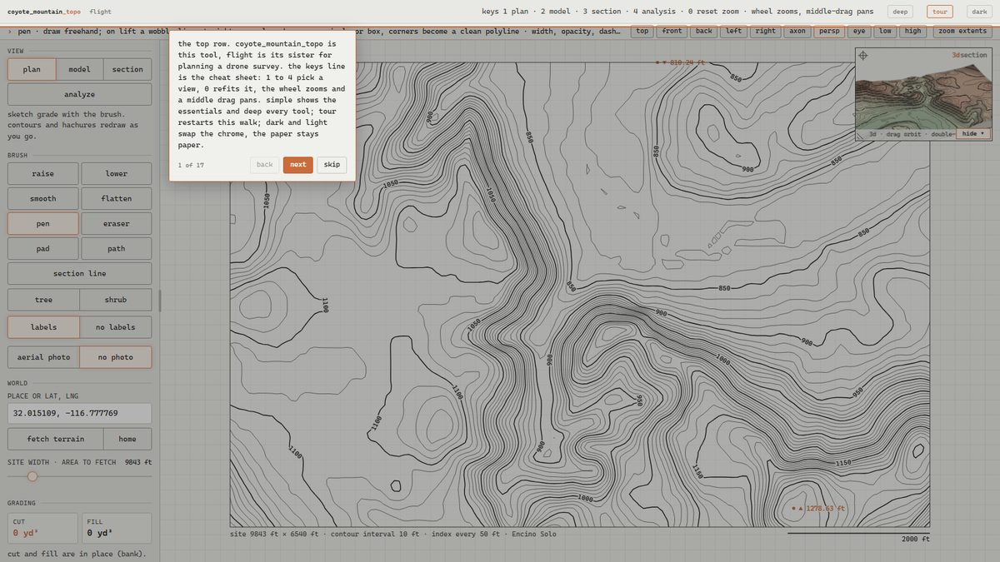
the top row. coyote_mountain_topo is this tool, flight is its sister for planning a drone survey. the keys line is the cheat sheet: 1 to 4 pick a view, 0 refits it, the wheel zooms and a middle drag pans. simple shows the essentials and deep every tool; tour restarts this walk; dark and light swap the chrome, the paper stays paper.
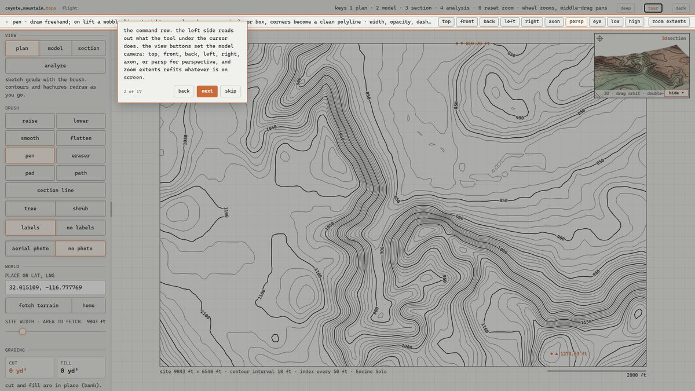
the command row. the left side reads out what the tool under the cursor does. the view buttons set the model camera: top, front, back, left, right, axon, or persp for perspective, and zoom extents refits whatever is on screen.
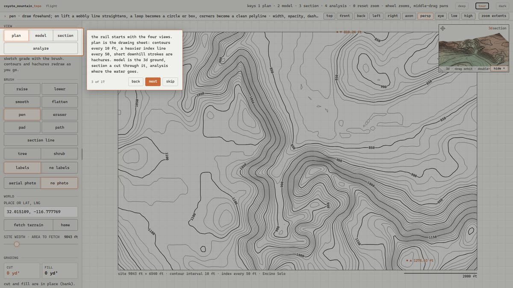
the rail starts with the four views. plan is the drawing sheet: contours every 10 ft, a heavier index line every 50, short downhill strokes are hachures. model is the 3d ground, section a cut through it, analysis where the water goes.
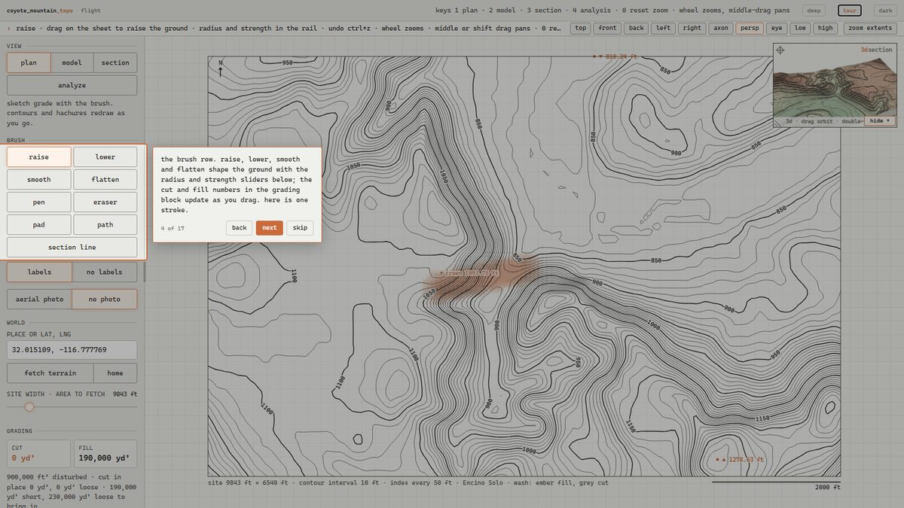
the brush row. raise, lower, smooth and flatten shape the ground with the radius and strength sliders below; the cut and fill numbers in the grading block update as you drag. here is one stroke.
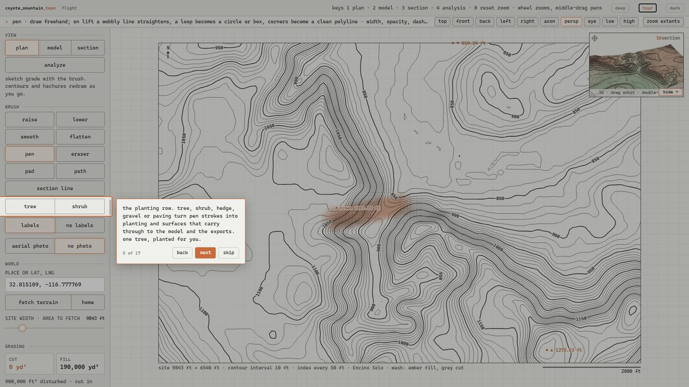
the planting row. tree, shrub, hedge, gravel or paving turn pen strokes into planting and surfaces that carry through to the model and the exports. one tree, planted for you.
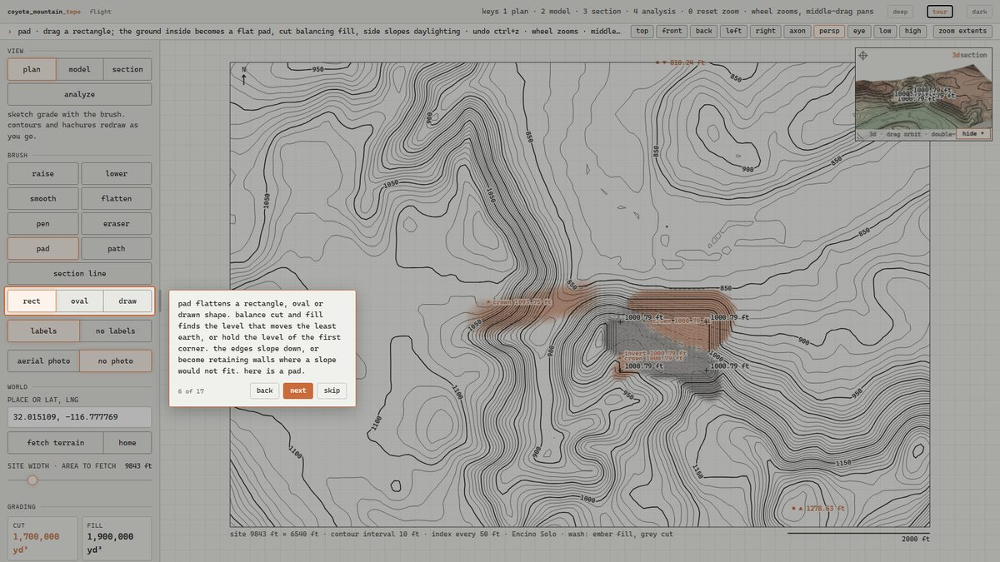
pad flattens a rectangle, oval or drawn shape. balance cut and fill finds the level that moves the least earth, or hold the level of the first corner. the edges slope down, or become retaining walls where a slope would not fit. here is a pad.
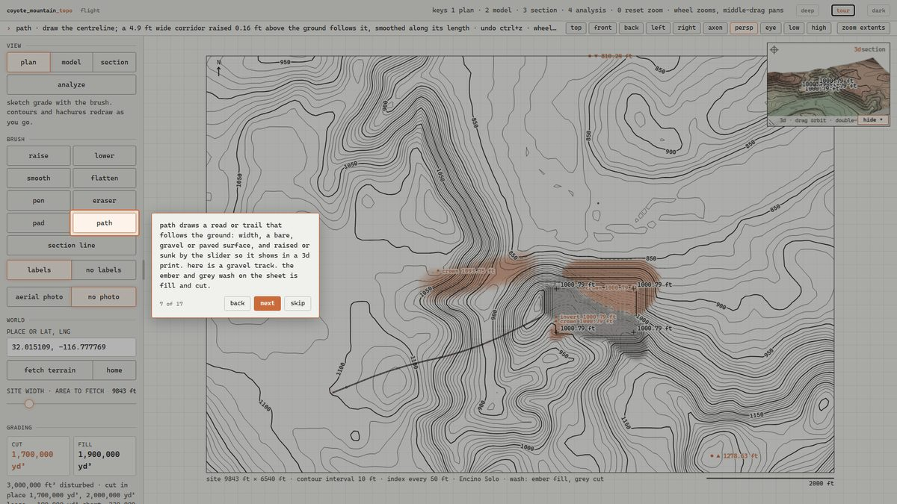
path draws a road or trail that follows the ground: width, a bare, gravel or paved surface, and raised or sunk by the slider so it shows in a 3d print. here is a gravel track. the ember and grey wash on the sheet is fill and cut.
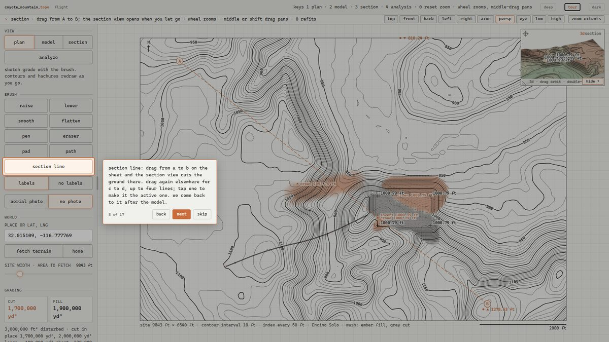
section line: drag from a to b on the sheet and the section view cuts the ground there. drag again elsewhere for c to d, up to four lines; tap one to make it the active one. we come back to it after the model.
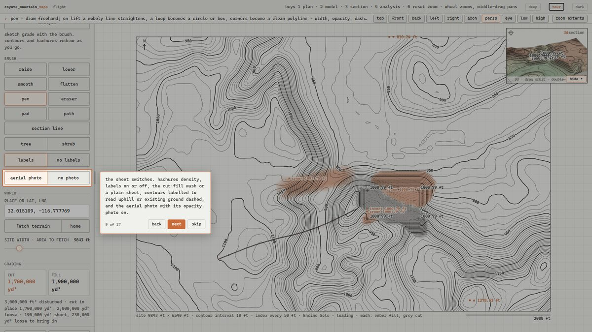
the sheet switches. hachures density, labels on or off, the cut·fill wash or a plain sheet, contours labelled to read uphill or existing ground dashed, and the aerial photo with its opacity. photo on.
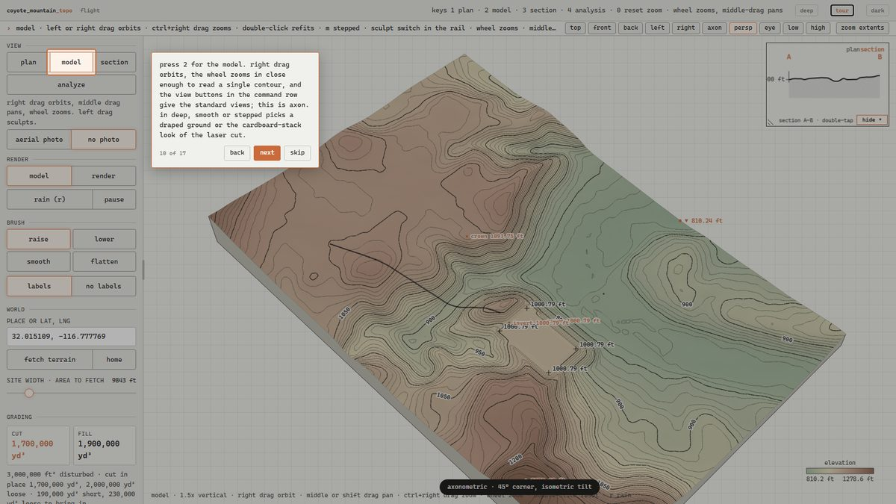
press 2 for the model. right drag orbits, the wheel zooms in close enough to read a single contour, and the view buttons in the command row give the standard views; this is axon. in deep, smooth or stepped picks a draped ground or the cardboard-stack look of the laser cut.
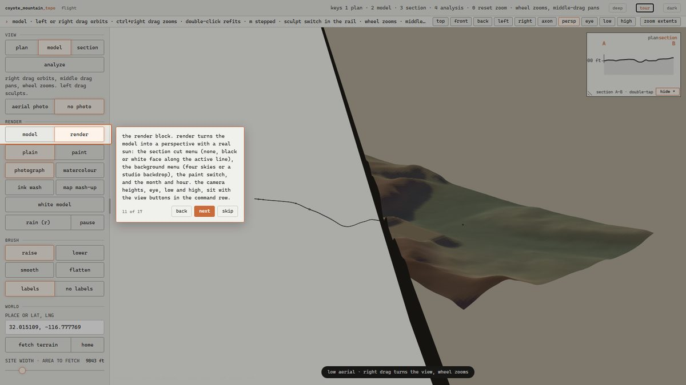
the render block. render turns the model into a perspective with a real sun: the section cut menu (none, black or white face along the active line), the background menu (four skies or a studio backdrop), the paint switch, and the month and hour. the camera heights, eye, low and high, sit with the view buttons in the command row.
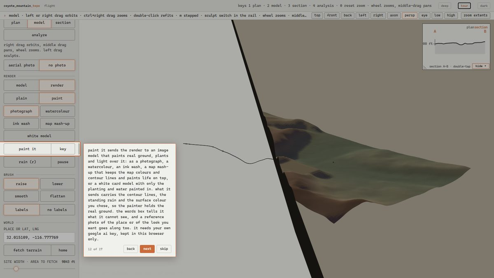
paint it sends the render to an image model that paints real ground, plants and light over it: as a photograph, a watercolour, an ink wash, a map mash-up that keeps the map colours and contour lines and paints life on top, or a white card model with only the planting and water painted in. what it sends carries the contour lines, the standing rain and the surface colour you chose, so the painter holds the real ground. the words box tells it what it cannot see, and a reference photo of the place or of the look you want goes along too. it needs your own google ai key, kept in this browser only.
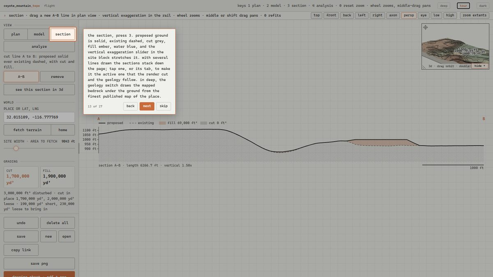
the section, press 3. proposed ground is solid, existing dashed, cut grey, fill ember, water blue, and the vertical exaggeration slider in the site block stretches it. with several lines drawn the sections stack down the page; tap one, or its tab, to make it the active one that the render cut and the geology follow. in deep, the geology switch draws the mapped bedrock under the ground from the finest published map of the place.
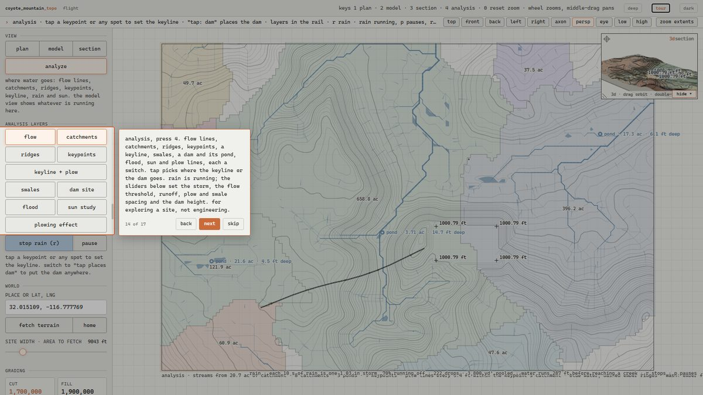
analysis, press 4. flow lines, catchments, ridges, keypoints, a keyline, swales, a dam and its pond, flood, sun and plow lines, each a switch. tap picks where the keyline or the dam goes. rain is running; the sliders below set the storm, the flow threshold, runoff, plow and swale spacing and the dam height. for exploring a site, not engineering.
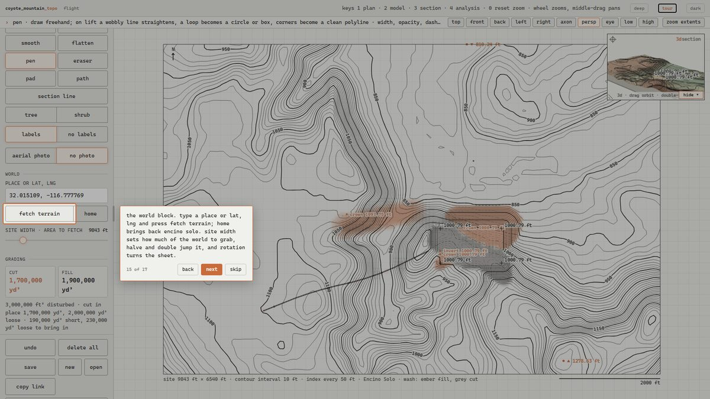
the world block. type a place or lat, lng and press fetch terrain; home brings back encino solo. site width sets how much of the world to grab, halve and double jump it, and rotation turns the sheet.
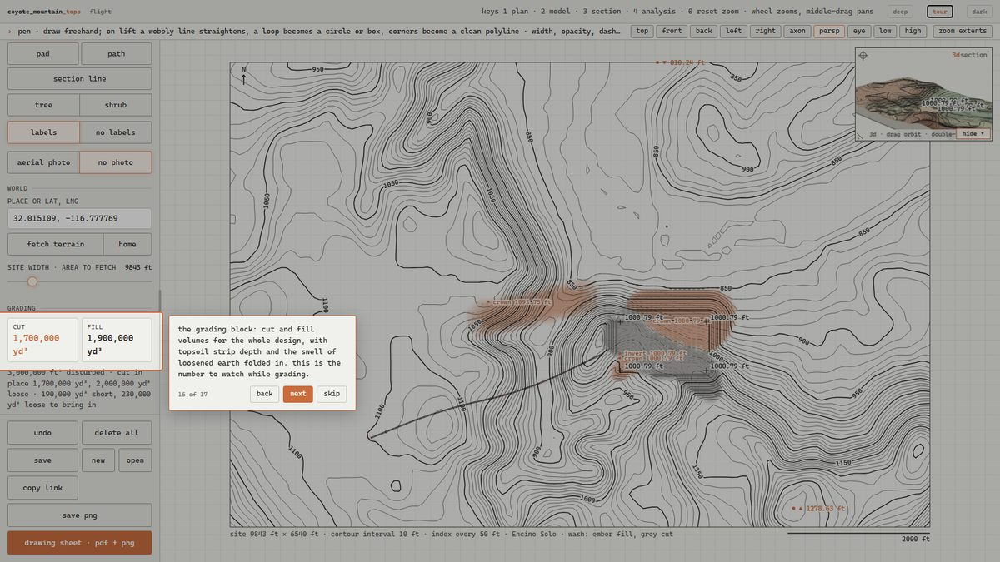
the grading block: cut and fill volumes for the whole design, with topsoil strip depth and the swell of loosened earth folded in. this is the number to watch while grading.
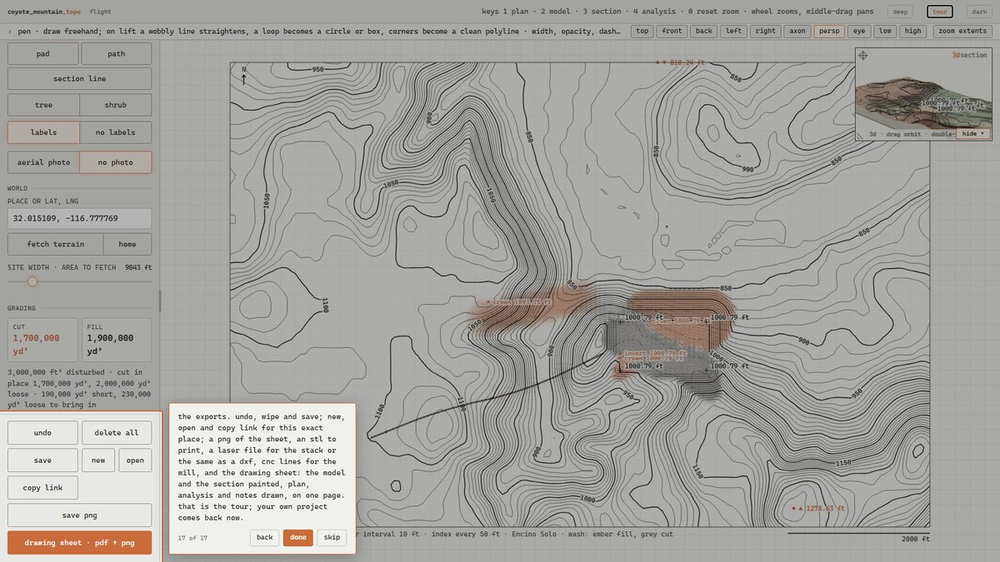
the exports. undo, wipe and save; new, open and copy link for this exact place; a png of the sheet, an stl to print, a laser file for the stack or the same as a dxf, cnc lines for the mill, and the drawing sheet: the model and the section painted, plan, analysis and notes drawn, on one page. that is the tour; your own project comes back now.
the sandbox
A depth camera over a box of sand, a projector above it, and this tool on the machine between them. Shape the sand and the contours, water and rain follow your hands. Load a grading design and the box shows where sand must come off and go on until the students have built it.
It runs on an Orbbec Femto Bolt or any camera that speaks the Azure Kinect API, through a small Python bridge. Setup is a page: sandbox/README.md.
what students need
- A laptop with Chrome, Edge or Safari. It runs on a phone too, in a pinch.
- Internet for the terrain and the aerial photo. After that the project lives in the browser and in a file they save.
- For painting: a Google AI Studio key of their own, pasted once with the key button. It stays in their browser and never leaves it. Everything else works without one.
- Feet or metres, their choice; the sheet follows.
free for teaching · source available
The tool is one file of plain JavaScript, published under the PolyForm Noncommercial License 1.0.0. Teaching, study, research and personal use are free, including copying it onto a school machine, reading how it works and changing it for a class. Use in commercial work, or offering it as a service, needs a separate licence. The source is at github.com/shopnerd/coyote-mountain.
Built by Will Rollins at Coyote Mountain, Encino Solo, Baja California, and tested on it.